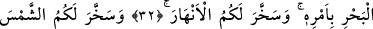
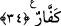

O ALLAH Kİ!..
32. (O öyle lütufkâr) Allah’tır ki, gökleri ve yeri yarattı, gökten suyu indirip
onunla rızık olarak size türlü meyveler çıkardı; izni ile denizde yüzüp gitmeleri
için gemileri emrinize verdi; nehirleri de sizin (yararlanmanız) için akıttı.
33. Düzenli seyreden güneşi ve ayı size faydalı kıldı; geceyi ve gündüzü de
istifâdenize verdi.
34. O size istediğiniz her şeyden verdi. Allah’ın nîmetini sayacak olsanız
sayamazsınız. Doğrusu insan çok zalim, çok nankördür!
O öyle lütufkâr “Allah’tır ki, gökleri ve” göklerde bulunan ulvî cisimler ile “yeri” ve
yerdeki çeşitli mahlûkları “yarattı.”
Gökler, önce zikredilmiştir. Çünkü gökler, dişiye nazaran erkek yerindedir.
“Gökten” yâni bulutlardan su indirdi. Çünkü üzerimizde bulunan her şeye “semâ
(gök)” denir. Ya da felekten su indirdi. Çünkü nasların zâhirinin gösterdiğine göre
yağmur felekte meydana gelir, oradan bulutlara, oradan da yere yağar.
Fakir (Bursevî) der ki: Bana göre de tercihe şâyân olan budur. Çünkü Allah Teâlâ,
burada kullarına ihsân ettiği nîmetlerin çok daha fazla olduğunu bildirerek önce gökleri
ve yeri yarattığını açıklıyor. Sonra da bunlarda bulunan genel faydalara işâret ediyor.
Ancak bu nîmetlerden her birinin başlı başına bir nîmet olduğunu göstermek için de
takdim-tehir yaparak Güneş ile Ay’ın insanoğlunun emrine verildiğini sona bırakıyor.
Şâyet ‘gökten’ ifâdesiyle bulutlar kasdedilmiş olsaydı, âyette zikredilen şeyler birbirine
tam karşılık gelmemiş olacaktı.
“sûyu” yâni yağmuru “indirip onunla” yâni yere kabûl edicilik kuvvesi verdiği gibi
kendisine failiyyet/te’sir kuvvesi verdiği bu su sâyesinde hayâtınızı devam
ettirebileceğiniz “rızık olarak size türlü meyveler çıkardı.” Buradaki rızık, ‘rızık
olarak verilen’ mânâsında olup hem yiyeceklere hem de giyeceklere şâmildir.
“O’nunla … meyveler çıkardık.” (Fâtır, 35/27) âyetinin delâlet ettiği üzere “semerât